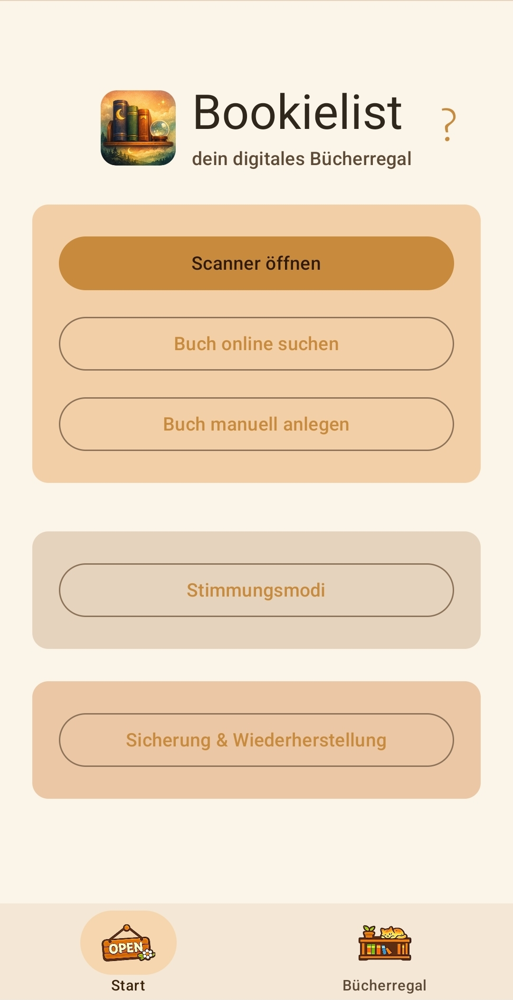
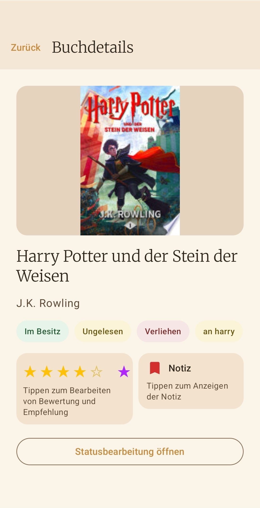
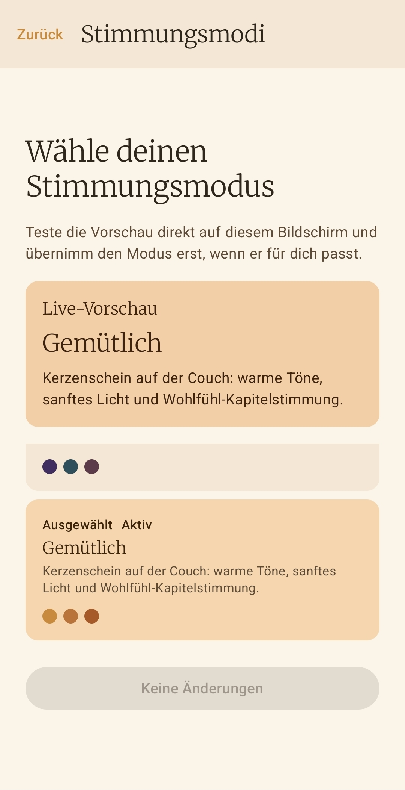

ISBN Scanner
Capture books in seconds, including an intelligent lookup chain with cloud and API fallback.
Cozy Reading Companion
Your digital bookshelf: calm, clear, and free from distractions.
Scan ISBNs or search for books online, manage reading status, sort your collection, and keep everything backed up locally. No forced account. No tracking. No subscription trap.
Features
Capture books in seconds, including an intelligent lookup chain with cloud and API fallback.
Load metadata from external sources when no barcode is available.
Enter ISBN, title, author, and cover manually, then enrich the record later if needed.
Track unread, started, finished, or stopped separately for owned books and wishlist items.
Keep your actual collection separate from your wishlist while still managing everything in one app.
Anonymous book metadata helps make matches faster for the community.
Choose from multiple mood modes to match the atmosphere of your current reading phase.
Export your library as JSON and restore it in a controlled way on a new device.
Why Bookielist
Bookielist is meant to feel like a personal bookshelf, not like a service that turns your collection into a profile or pushes you toward a subscription.
Your collection, reading status, and backups stay under your control on the device instead of being tied to a user account or mandatory cloud service.
No in-app tracking, no profiling, and no ad IDs. To improve matches, Bookielist only uses general book metadata instead of personal reading profiles.
No banners, no advertising interruptions, and no artificial friction. The focus stays on your shelf instead of attention tricks.
Monetization
You can try Bookielist for free. The full version will later cost a one-time 1.99 € with no subscription, no hidden follow-up costs, and no paywall spiral.
Flow
Screenshots







The app stores personal library data locally on your device. Details about the cloud cache, API requests, and your rights are available in the separate Bookielist Privacy Policy.
Go to Privacy Policy